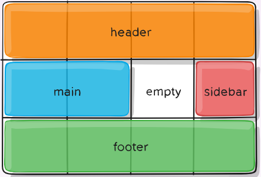

CSS Grid Layout
Created by Zankevich Anna
CSS Grid layouts are definitely one of the most exciting developments in CSS for years.
It is a 2-dimensional system, meaning it can handle both columns and rows, unlike flexbox which is largely a 1-dimensional system.
What about browser support?
CSS Terminology
- Grid container
- Grid item
- Grid line
- Grid cell
- Grid track
- Grid area
- Grid gap
Grid Lines
The lines between columns are called column lines.The lines between rows are called row lines.
Grid Cell
A grid cell is the smallest unit on a grid. Conceptually it is like a table cell.
Grid Area
The total space surrounded by four grid lines. A grid area may be comprised of any number of grid cells. Here's the grid area between row grid lines 1 and 3, and column grid lines 1 and 3.

Grid Track
The space between two adjacent grid lines. You can think of them like the columns or rows of the grid. Here's the grid track between the second and third row grid lines.
Grid Gaps
The spaces between each column/row are called gaps.
FR
Fr is a fractional unit and 1fr is for 1 part of the available space.
Grid Template Area
The grid-template-areas property specifies areas within the grid layout. You can name grid items by using the grid-area property, and then reference to the name in the grid-template-areas property.
grid-area-name: [area-name]
______
Specifies what grid area the element is placed within